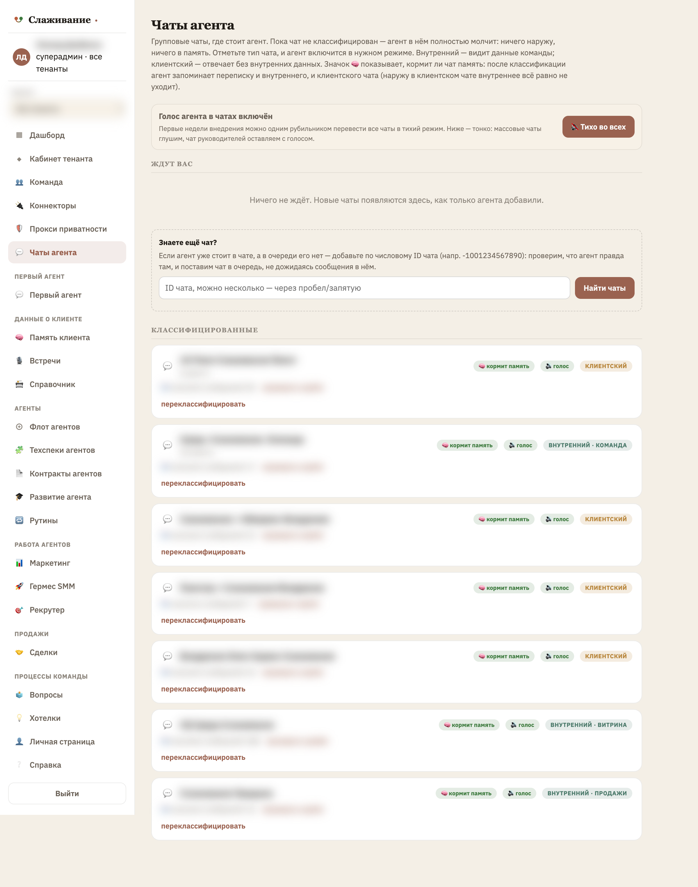
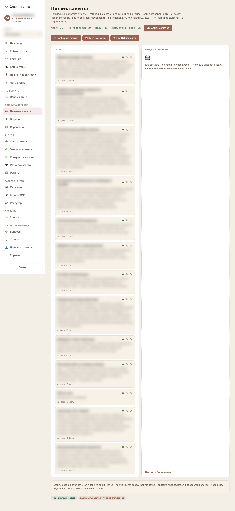
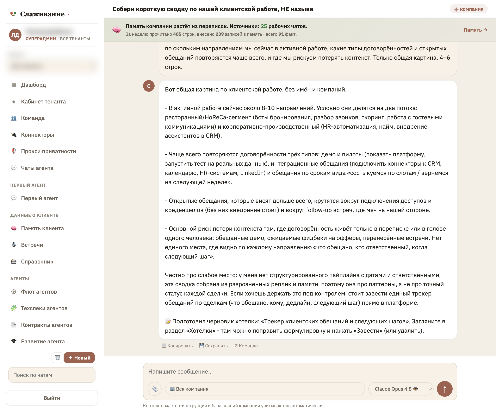

Реальное управление компанией живёт не в CRM, а в чатах. Мы превращаем десятки рабочих групп в Telegram в собранную память компании — с приватностью, встроенной в основу.
На какой стадии сделка, кто последний говорил, о чём договорились, что обещали и не сделали. В компании на 50–300 человек этот ответ размазан по десяткам чатов. CRM хранит то, что занесли руками. А 80% живого контекста — решения, обещания, статусы — остаётся в переписке, куда никто ничего не заносит.
Новые чаты собираются в очередь. Владелец в пару кликов помечает: внутренний или клиентский. Пока чат не классифицирован — агент в нём полностью молчит и ничего не запоминает. Видно карту всех групп: тип и то, кормит ли чат память.
Приватность = условие включенияАгент не хранит переписку целиком. Он дистиллирует из потока устойчивые факты: договорённости, обещания, статусы клиентов. У каждого факта — источник, дата и «живость»: старое затухает, свежее всплывает наверх.
Не архив, а собранная картинаНа вопрос «как у нас дела» агент отвечает не пересказом чата, а сведённой картиной — со ссылкой на источник. Честно отделяет, что знает точно, от того, что додумал, и сам предлагает, что взять под контроль.
Ответ за секунды, а не за часНе макеты — рабочий кабинет платформы. Названия компаний и имена людей на скринах скрыты.



По умолчанию агент молчит и ничего не запоминает из нового чата, пока владелец не решил, что он вообще имеет право видеть.
Личные переписки сотрудника с агентом не попадают в корпоративную память. Командные и клиентские — попадают.
В клиентском чате агент видит контекст, но внутреннюю кухню наружу не выносит и не пишет без явного разрешения.
Расскажем, как устроен контур, и разберём на вашем сценарии: какие чаты есть, что в них теряется и как это собрать в память компании.
Обсудить внедрение